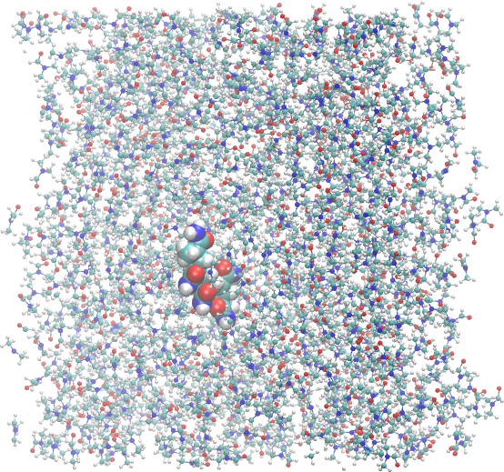
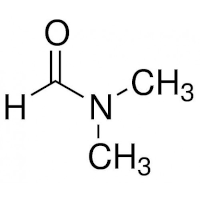
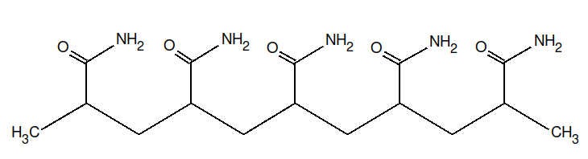
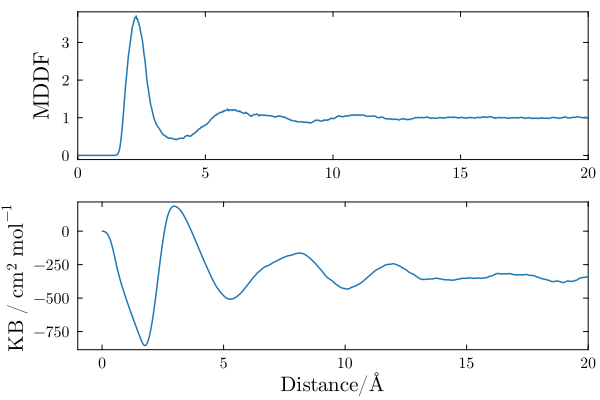
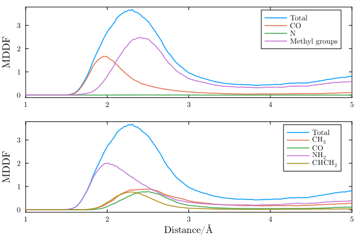
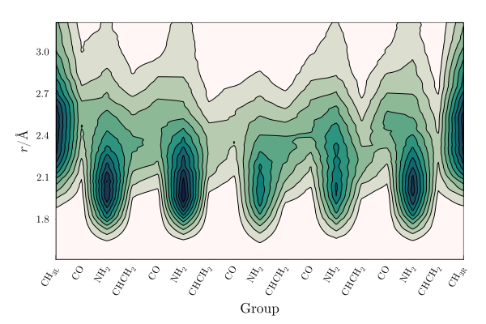

Polyacrylamide in DMF
In this example we illustrate how the solvation structure of a polymer can be studied with ComplexMixtures.jl. The system is a 5-mer segment of polyacrylamide (PAE - capped with methyl groups), solvated with dimethylformamide (DMF). The system is interesting because of the different functional groups and polarities involved in the interactions of DMF with PAE. A snapshot of the system is shown below.

The structures of DMF and of the polyacrylamide segment are:
 |
 |
| DMF | Polyacrylamide |
Index
Data, packages, and execution
The files required to run this example are available at [this link], and are:
equilibrated.pdb: The PDB file of the complete system.traj_Polyacry.dcd: Trajectory file. This is a 275Mb file, necessary for running from scratch the calculations.
To run the scripts, we suggest the following procedure:
- Create a directory, for example
example2. - Unzip and copy the required data files above to this directory.
- Launch
juliain that directory: activate the directory environment, and install the required packages. This launching Julia and executing:import Pkg Pkg.activate(".") Pkg.add(["ComplexMixtures", "PDBTools", "Plots", "LaTeXStrings", "EasyFit"]) exit() - Copy the code of each script in to a file, and execute with:
Alternatively (and perhaps preferably), copy line by line the content of the script into the Julia REPL, to follow each step of the calculation.julia -t auto script.jl
MDDF and KB integrals
Here we compute the minimum-distance distribution function, the Kirkwood-Buff integral, and the atomic contributions of the solvent to the density. This example illustrates the regular usage of ComplexMixtures, to compute the minimum distance distribution function, KB-integrals and group contributions.
Complete example code: click here!
import Pkg;
Pkg.activate(".");
using PDBTools
using ComplexMixtures
using Plots
using LaTeXStrings
using EasyFit: movavg
# The full trajectory file is available at:
# https://www.dropbox.com/scl/fi/jwafhgxaxuzsybw2y8txd/traj_Polyacry.dcd?rlkey=p4bn65m0pkuebpfm0hf158cdm&dl=0
trajectory_file = "./traj_Polyacry.dcd"
# Load a PDB file of the system
system = read_pdb("./equilibrated.pdb")
# Select the atoms corresponding DMF molecules
dmf = select(system, "resname DMF")
# Select the atoms corresponding to the Poly-acrylamide
acr = select(system, "resname FACR or resname ACR or resname LACR")
# Set the solute and the solvent selections for ComplexMixtures
solute = AtomSelection(acr, nmols=1)
solvent = AtomSelection(dmf, natomspermol=12)
# Use a large dbulk distance for better KB convergence
options = Options(bulk_range=(20.0, 25.0))
# Compute the mddf and associated properties
results = mddf(trajectory_file, solute, solvent, options)
# Save results to file for later use
save(results, "./mddf.json")
println("Results saved to ./mddf.json file")
# Plot the MDDF and KB integrals
plot_font = "Computer Modern"
default(
fontfamily=plot_font,
linewidth=1.5,
framestyle=:box,
label=nothing,
grid=false,
palette=:tab10
)
scalefontsizes();
scalefontsizes(1.3);
# Plot the MDDF of DMF relative to PolyACR and its corresponding KB integral
plot(layout=(2, 1))
plot!(
results.d,
movavg(results.mddf, n=9).x, # Smooth example with a running average
ylabel="MDDF",
xlims=(0, 20),
subplot=1,
)
# Plot the KB integral
plot!(
results.d,
movavg(results.kb, n=9).x, # smooth kb
xlabel=L"\textrm{Distance / \AA}",
ylabel=L"\textrm{KB~/~cm^2~mol^{-1}}",
xlim=(-1, 20),
subplot=2
)
savefig("./mddf_kb.png")
println("Plot saved to mddf_kb.png")Output
The distribution of DMF molecules around polyacrylamide is shown below. There is a peak at ~2.5Angs, indicating favorable non-specific interactions between the solvent molecules and the polymer. The peak is followed by a dip and diffuse peaks at higher distances. Thus, the DMF molecules are structured around the polymer, but essentially only in the first solvation shell.

The KB integral in a bicomponent mixture converges to the (negative of the) apparent molar volume of the solute. It is negative, indicating that the accumulation of DMF in the first solvation shell of the polymer is not enough to compensate the excluded volume of the solute.
Group contributions
The MDDF can be decomposed into the contributions of the DMF chemical groups, and on the polyacrylamide chemical groups. In the first panel below we show the contributions of the DMF chemical groups to the distribution function.
Complete example code: click here!
import Pkg;
Pkg.activate(".");
using ComplexMixtures
using Plots
using LaTeXStrings
using EasyFit: movavg
# Some default settings for the plots
plot_font = "Computer Modern"
Plots.default(
fontfamily=plot_font,
linewidth=1.5,
framestyle=:box,
label=nothing,
grid=false,
)
# Load previously saved results, computed in the previous script
results = load("./mddf.json")
# Plot with two subplots
plot(layout=(2, 1))
# Plot the total mddf
plot!(
results.d,
movavg(results.mddf, n=10).x, # Smooth example with a running average
label="Total",
subplot=1
)
# Plot DMF group contributions to the MDDF. We use a named tuple where
# the keys are the group names, and the values are the atom names of the group
groups = (
"CO" => ["C", "O"], # carbonyl
"N" => ["N"],
"Methyl groups" => ["CC", "CT", "HC1", "HC2", "HC3", "HT1", "HT2", "HT3"],
)
for (group_label, group_atoms) in groups
# Retrieve the contributions of the atoms of this group
group_contrib = contributions(results, SolventGroup(group_atoms))
# Plot the contributions of this groups, with the appropriate label
plot!(
results.d,
movavg(group_contrib, n=10).x,
label=group_label,
subplot=1
)
end
# Adjust scale and label of axis
plot!(xlim=(1, 5), ylabel="MDDF", subplot=1)
#
# Plot ACR group contributions to the MDDF. This is an interesting case,
# as the groups are repeated along the polymer chain
#
groups = (
"CH_3" => ["CF", "HF1", "HF2", "HF3", "CL", "HL1", "HL2", "HL3"], # terminal methyles
"CO" => ["OE1", "CD"], # carbonyl
"NH_2" => ["NE2", "HE22", "HE21"], # amine
"CHCH_2" => ["C", "H2", "H1", "CA", "HA"], # backbone
)
# Plot total mddf
plot!(
results.d,
movavg(results.mddf, n=10).x, # Smooth example with a running average
label="Total",
subplot=2
)
# Plot group contributions
for (group_name, atom_names) in groups
group_contrib = contributions(results, SoluteGroup(atom_names))
plot!(
results.d,
movavg(group_contrib, n=10).x,
label=latexstring("\\textrm{$group_name}"),
subplot=2
)
end
# Adjust scale and label of axis
plot!(
xlim=(1, 5),
xlabel=L"\textrm{Distance / \AA}",
ylabel="MDDF", subplot=2
)
# Save figure
savefig("./mddf_groups.png")
println("Created figure file: ./mddf_groups.png")Output
The decomposition reveals that specific interactions peaking at distances slightly smaller than 2$\AA$ exist between the polymer and the carbonyl group of DMF. Thus, there hydrogen bonds between the polymer and this group, which dominate the interactions between the solute and the solvent at short distances. The non-specific interactions peak at 2.5Angs and are composed of contributions of all DMF chemical groups, but particularly of the methyl groups.

The decomposition of the same MDDF in the contributions of the chemical groups of the polymer is clearly associated to the DMF contributions. The specific, hydrogen-bonding, interactions, are associated to the polymer amine groups. The amine groups also contribute to the non-specific interactions at greater distances, but these are a sum of the contributions of all polymer groups, polar or aliphatic.
2D density map
We can decompose the MDDF into the contributions of each portion of the polymer chain. The map below displays the contributions of each chemical group of the polymer, now split into the mers of the polymer, to the MDDF.
Complete example code: click here!
import Pkg;
Pkg.activate(".");
using ComplexMixtures
using Plots
using EasyFit: movavg
using LaTeXStrings
using PDBTools
# Here we will produce a 2D plot of group contributions, splitting the
# contributions of each mer of the polymer into its chemical groups
# Chemical groups of the polymer monomers, defined by the atom types:
groups = (
"CH_{3L}" => ["CF", "HF1", "HF2", "HF3"], # left-terminal methyl
"CO" => ["OE1", "CD"], # carbonyl
"NH_2" => ["NE2", "HE22", "HE21"], # amine
"CHCH_2" => ["C", "H2", "H1", "CA", "HA"], # backbone
"CH_{3R}" => ["CL", "HL1", "HL2", "HL3"], # right-terminal methyles
)
system = read_pdb("./equilibrated.pdb")
acr = select(system, "resname FACR or resname ACR or resname LACR")
results = load("./mddf.json")
# Here we split the polymer in residues, to extract the contribution of
# each chemical group of each polymer mer independently
group_contribs = Vector{Float64}[]
labels = LaTeXString[]
for mer in eachresidue(acr)
for (group_label, group_atoms) in groups
if resnum(mer) != 1 && group_label == "CH_{3L}" # first residue only
continue
end
if resnum(mer) != 5 && group_label == "CH_{3R}" # last residue only
continue
end
# Filter the atoms of this mer that belong to the group
mer_group_atoms = filter(at -> name(at) in group_atoms, mer)
# Retrieve the contribution of this mer atoms to the MDDF
atoms_contrib = contributions(results, SoluteGroup(mer_group_atoms))
# Smooth the contributions
atoms_contrib = movavg(atoms_contrib; n=10).x
# Add contributions to the group contributions list
push!(group_contribs, atoms_contrib)
# Push label to label list, using LaTeX formatting
push!(labels, latexstring("\\textrm{$group_label}"))
end
end
# Convert the group contributions to a matrix
group_contribs = stack(group_contribs)
# Find the indices of the limits of the map we want
idmin = findfirst(d -> d > 1.5, results.d)
idmax = findfirst(d -> d > 3.2, results.d)
# Plot contour map
Plots.default(fontfamily="Computer Modern")
contourf(
1:length(labels),
results.d[idmin:idmax],
group_contribs[idmin:idmax, :],
color=cgrad(:tempo), linewidth=1, linecolor=:black,
colorbar=:none, levels=10,
xlabel="Group", ylabel=L"r/\AA", xrotation=60,
xticks=(1:length(labels), labels),
margin=5Plots.Measures.mm # adjust margin
)
savefig("./map2D_acr.png")
println("Plot saved to map2D_acr.png")Output
The terminal methyl groups interact strongly with DMF, and strong local density augmentations are visible in particular on the amine groups. These occur at less than 2.0Angs and are characteristic of hydrogen-bond interactions. Interestingly, the DMF molecules are excluded from the aliphatic and carbonyl groups of the polymer, relative to the other groups.
Finally, it is noticeable that the central mer is more weakly solvated by DMF than the mers approaching the extremes of the polymer chain. This is likely a result of the partial folding of the polymer, that protects the central mers from the solvent in a fraction of the polymer configurations.

3D density map
The contributions of the polymer atoms to the MDDF can also be projected into the space around the polymer, with the grid3D function, and visualized with the visualize function of PDBTools (version 3.41.0 or greater).
Complete example code: click here!
import Pkg;
Pkg.activate(".");
using ComplexMixtures
using PDBTools
# Here we will project the contributions of the polymer atoms to the MDDF
# into the space around the polymer, and visualize the density of DMF
system = read_pdb("./equilibrated.pdb")
acr = select(system, "resname FACR or resname ACR or resname LACR")
results = load("./mddf.json")
# The PDB file does not contain the element column, and the element of
# the atoms is guessed from the atom names. Here, the CL (terminal methyl
# carbon) atom name would be interpreted as Chlorine. Thus we set the
# elements of the polymer atoms explicitly (all are C, H, N, or O):
for atom in acr
atom.pdb_element = string(first(name(atom)))
end
# Compute the 3D density grid around the polymer
grid = grid3D(results, system; dmin=1.5, dmax=3.5)
# Regions associated with the hydrogen-bonding peak of the MDDF (d < 2.0 Å),
# with at least 10% of the maximum contribution. The polymer is shown in
# balls and sticks, and the grid points as dots colored by their relative
# contribution, from white (zero) to red (one)
hbonds = filter(p -> occup(p) < 2.0 && beta(p) > 0.1, grid)
view_hbonds = visualize(
acr => (style=:ballandstick,),
hbonds => (
style=:dots,
color_by=beta.(hbonds),
colormap=:rwb,
color_range=(1, -1),
opacity=0.8,
),
)
save("./grid_hbonds.html", view_hbonds)
# Regions associated with the second peak of the MDDF (2.0 Å < d < 3.5 Å),
# with at least 50% of the maximum contribution
second_peak = filter(p -> 2.0 < occup(p) < 3.5 && beta(p) > 0.5, grid)
view_second_peak = visualize(
acr => (style=:ballandstick,),
second_peak => (
style=:dots,
color_by=beta.(second_peak),
colormap=:rwb,
color_range=(1, -1),
opacity=0.8,
),
)
save("./grid_second_peak.html", view_second_peak)
# The grid can also be converted into volumetric data, smoothed with a
# Gaussian function of width 0.5 Å, and represented by isosurfaces. Here,
# the isosurfaces correspond to 50% (orange, transparent) and 75% (red)
# of the maximum value of the smoothed data
density = volumetric_data(grid; sigma=0.5)
dmax = maximum(density.data)
view_isosurfaces = visualize(
acr => (style=:ballandstick,),
density => (isovalue=0.5 * dmax, color="orange", opacity=0.4),
density => (isovalue=0.75 * dmax, color="red"),
)
save("./isosurfaces.html", view_isosurfaces)
# Write the volumetric data to a file, to be visualized in other software
write_dx("./density.dx", density)
println("Views saved to grid_hbonds.html, grid_second_peak.html, and isosurfaces.html")
Output
The script saves the views as the grid_hbonds.html, grid_second_peak.html, and isosurfaces.html files, which can be opened in any web browser. The views are shown below (rotate, zoom, and hover over the points to identify the polymer atoms closest to each point).
The polymer is flexible, and the grid is built around a single conformation of the polymer (the one of the equilibrated.pdb file). Thus, the views show the contributions of each polymer atom to the MDDF, averaged over the trajectory, projected into the space around this reference conformation.
The first view displays the regions associated with the hydrogen-bonding peak of the MDDF (distances smaller than 2.0Å), with at least 10% of the maximum contribution. The polymer is shown in balls and sticks, and the grid points as dots, colored from white to red according to their contribution to the MDDF:
These regions surround the hydrogen atoms of the amine groups of the polymer, consistently with the hydrogen bonds of these groups with the carbonyl oxygen of DMF.
The second view displays the regions associated with distances between 2.0 and 3.5Å, with at least 50% of the maximum contribution:
At these distances, the contributions of the amine groups are still important, but the terminal methyl groups of the polymer (and, to a smaller extent, the carbonyl groups) also contribute, consistently with the 2D map above.
Finally, the grid can be converted into volumetric data with the volumetric_data function, which places the values of the grid on a regular three-dimensional grid. The data is smoothed with a Gaussian function of width sigma=0.5 Å, such that it can be represented by continuous isosurfaces. In the view below, the isosurfaces correspond to 50% (orange, transparent) and 75% (red) of the maximum value of the smoothed data:
The regions of highest density (red) are located near the amine groups, at hydrogen-bonding distances. The volumetric data is also written to the density.dx file (OpenDX format), which can be visualized in other software, such as VMD.
References
Molecules built with JSME: B. Bienfait and P. Ertl, JSME: a free molecule editor in JavaScript, Journal of Cheminformatics 5:24 (2013) http://biomodel.uah.es/en/DIY/JSME/draw.en.htm
The system was built with Packmol.
The simulations were performed with NAMD, with CHARMM36 parameters.
The interactive 3D views were rendered with 3Dmol.js, through the visualize function of PDBTools: N. Rego and D. Koes, 3Dmol.js: molecular visualization with WebGL, Bioinformatics 31, 1322-1324 (2015). https://doi.org/10.1093/bioinformatics/btu829